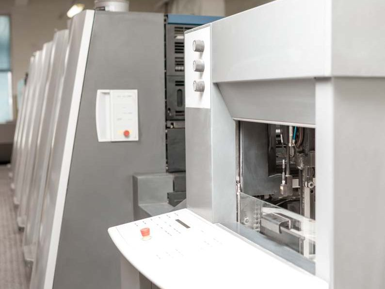

A B2B catalog buyers check before they call
Omkar Labels makes clothing labels and tags for apparel brands. Buyers check its website before they pick up the phone, so a broken page or an old listing costs trust. As a front-end developer, I turned the designer's files into responsive pages for a catalog of 50+ products.
A large catalog that had to stay current, and buyers deciding whether to call
A 50+ page catalog website in HTML, CSS and JavaScript, kept accurate

Business and user goals
The website is the manufacturer's shop window
Omkar Labels has made clothing labels, hang tags and tapes since 1999. Buyers check the website before they pick up the phone.
- What they make: labels, trims, tags and packaging.
- Whether to trust it: two factories, in Thane and Narmadapuram, and a four-point quality check on every order.
- Proof: OEKO-TEX, FSC and Global Recycled Standard certifications.

Information architecture
Organize the site around the buyer's questions
A B2B buyer needs to confirm what Omkar makes and whether to trust it, then ask for a price, without calling first.
- What do you make? Products grouped into 4 families, from the label inside the collar to the box on the shelf.
- Can I trust you? About Us and Quality one tap away, with the factories and certifications.
- How do I order? A 4-step path: order intake, design, quality check, delivery.
- Request a Quote as the one primary action, so the next step is always visible.
Design-to-code handoff
Raise the mismatch before release
When the design file and the browser didn't match, I raised it early and we solved it together before release. When a layout broke in one browser and not another, I traced the cause in Chrome DevTools and fixed the code, not the symptom.
Responsive front-end
From design file to working page
- Layout: HTML and CSS, with Bootstrap's grid so pages held up on every screen.
- Behavior: JavaScript and jQuery.
- Content: I kept the catalog of 50+ products accurate as things changed, on the company's WordPress site.
Results and learning
Why every designer should build something
Handoffs answer questions early
I know which questions a handoff leaves open, because I used to be the one asking them.
Speak the developer's language
I can talk through HTML and CSS with front-end developers on their terms.
Know what's buildable
It taught me what is possible in the browser, which still shapes how I design.
A quote assistant
A buyer types "500 woven labels, two colors" and AI drafts the quote form for them to confirm.
Search in plain words
Find the right label by describing it, without knowing the product name.